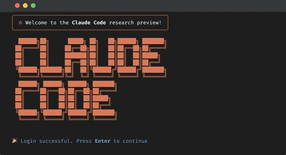
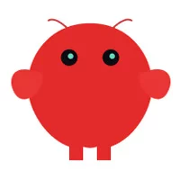

Two AI agents are dominating developer and power-user conversations in 2026: Claude Code — Anthropic's terminal-native coding agent — and OpenClaw — the viral open-source personal assistant that became the fastest-growing GitHub project in history with over 250,000 stars. They are both powerful, both AI-driven, and yet they solve entirely different problems. This guide breaks down what each tool is, how to install it, where it shines, and where it falls short.

Claude Code
A terminal-based agentic coding assistant by Anthropic. Lives in your IDE and terminal, understands your entire codebase, and helps you write, refactor, and debug code using Claude models.

OpenClaw
An open-source autonomous personal agent originally by Peter Steinberger (formerly ClawdBot / MoltBot). Connects AI models to your messaging apps, files, email, and smart home to automate daily life tasks.
What Are They?
Claude Code
Claude Code is Anthropic's official CLI and IDE extension for software development. It runs directly in your terminal or inside VS Code, JetBrains, and Xcode. It operates with a 200K-token context window, meaning it can hold your entire codebase in "memory" during a session. It supports agentic patterns like sub-agents, task distribution, and multi-session project management. Under the hood it is powered by Claude models — including Claude Opus 4.6 for the most demanding reasoning tasks.
OpenClaw
OpenClaw is a general-purpose autonomous agent that was published in November 2025 and exploded in popularity in January 2026. It is model-agnostic — you can connect it to Claude, GPT-4o, Gemini, or open-source models like Kimi 2.5. Its killer feature is deep integration with messaging platforms (WhatsApp, Discord, Slack, iMessage) and over 100 community-built AgentSkills that let it browse the web, manage your calendar, answer emails, post on social media, and control smart home devices — autonomously, 24/7.
SponsoredSpin up a secure, isolated droplet for your OpenClaw instance. Starting at $6/month. No config headaches.
Key Differences at a Glance
| Feature | Claude Code | OpenClaw |
|---|---|---|
| Primary purpose | Software development | General-purpose life automation |
| Interface | Terminal + IDE extensions | Messaging apps (WhatsApp, Slack, Discord…) |
| Model support | Anthropic models only | Any LLM (Claude, GPT, Gemini, Kimi, local) |
| Memory | Resets between sessions (context window only) | Persistent local memory — weeks of context |
| Open source | No (proprietary) | Yes (MIT-licensed) |
| Cost | $20–$200/month subscription | Free (pay only for API tokens used) |
| Windows support | Native | WSL2 only |
| Security model | Sandboxed, audited by Anthropic | Self-hosted; significant exposure risk if misconfigured |
| Context window | 200K tokens (full codebase) | Depends on connected model |
| Community skills/plugins | Limited | 100+ AgentSkills |
Installation
Installing Claude Code
Claude Code requires Node.js and an Anthropic account. Install it globally via npm:
# Install Claude Code globally
npm install -g @anthropic-ai/claude-code
# Launch in your project directory
cd your-project
claudeClaude Code also integrates directly into VS Code and JetBrains IDEs via their extension marketplaces. After installation, sign in with your Anthropic account. Subscriptions start at $20/month (Pro) with higher usage plans at $100–$200/month (Max).
Installing OpenClaw
OpenClaw runs on Linux and macOS natively. Windows users must use WSL2
(wsl --install in PowerShell, then install Ubuntu and follow Linux steps).
Node 24 is recommended (Node 22 LTS still supported).
The fastest way is the one-liner installer, which handles Node.js and all dependencies automatically:
# One-liner install (recommended)
curl -fsSL https://openclaw.ai/install.sh | bashOr install manually via npm:
# Manual install
npm install -g openclaw
# Start the onboarding wizard
openclaw setupThe onboarding wizard walks you through configuring a gateway, connecting your messaging channels, adding AgentSkills, and setting up your workspace.
0.0.0.0, exposing your instance to your entire local network. In your openclaw.json set the gateway's bind to 127.0.0.1 (loopback) immediately after setup. Over 40,000 public-facing OpenClaw instances were found vulnerable in early 2026 (CVE-2026-25253, CVSS 8.8).
To connect OpenClaw to Claude models, provide an Anthropic API key (OAuth access was shut down by Anthropic in January 2026):
# In openclaw.json or via the wizard
{
"model": "claude-opus-4-6",
"apiKey": "YOUR_ANTHROPIC_API_KEY",
"gateway": {
"bind": "127.0.0.1"
}
}Access Claude Opus 4.6 directly via API. 200K context window. Pay-as-you-go. Start building for free today.
Example Use Cases
Claude Code — Developer Tasks
- Refactor a legacy codebase with full context
- Write and run tests interactively in the terminal
- Debug across multiple files simultaneously
- Generate boilerplate and scaffold new features
- Explain unfamiliar code in plain English
- Review pull requests and suggest improvements
OpenClaw — Life Automation
- Send daily news + calendar summaries to WhatsApp each morning
- Auto-respond to routine emails
- Schedule meetings from a chat message
- Post social media updates on a schedule
- Control smart home devices via Discord
- Organize local files and folders by rules
Claude Code in Action — Refactoring Example
# Inside your project folder
claude
# Example prompt:
> Refactor the authentication module to use JWT instead of session cookies.
Keep existing tests passing and add new tests for the JWT flow.Claude Code reads the relevant files, writes the refactored code with diffs you can review, updates the tests, and explains every change — all without leaving your terminal.
OpenClaw in Action — Morning Briefing Skill
# After setup, enable the MorningBriefing AgentSkill
openclaw skills add morning-briefing
# Configure in openclaw.json
{
"skills": {
"morning-briefing": {
"time": "07:30",
"channel": "whatsapp",
"include": ["weather", "calendar", "top-news"]
}
}
}Every morning at 7:30 AM, OpenClaw compiles your weather, calendar events, and top headlines and sends them to your WhatsApp — no manual trigger needed.
Future Advantages & Disadvantages
Claude Code
Advantages
- Deep IDE integration will only improve as Anthropic expands tooling
- 200K+ context window growing — entire large codebases in a single session
- Tightly coupled with Claude model improvements (Opus 4.x and beyond)
- Enterprise-grade security and compliance out of the box
- Sub-agent orchestration enables increasingly autonomous multi-step dev tasks
Disadvantages
- Locked into Anthropic — no switching to cheaper or open-source models
- Memory resets every session; no persistent project knowledge
- Subscription cost adds up, especially for heavy usage (Max plans)
- Limited to development workflows — no life automation features
- Closed source; limited community extensibility
OpenClaw
Advantages
- Model-agnostic — swap to cheaper or more capable models as they emerge
- Persistent memory across weeks; learns your habits over time
- Massive open-source community building new AgentSkills rapidly
- Free to run; cost is only API tokens consumed
- Can replace multiple subscription apps (calendar, email, automation tools)
Disadvantages
- Critical security vulnerability (CVE-2026-25253) exposed 40,000+ instances
- No Windows native support — WSL2 required
- Self-hosted means you are responsible for updates, security, and uptime
- Autonomous access to emails, files, and social media is a significant trust risk
- Government restrictions in some countries (China banned it from state enterprises)
Code faster with AI suggestions, multi-file edits, and chat — directly inside VS Code, JetBrains & more.
Which Should You Use?
These tools are more complementary than competitive. The choice depends on what you need:
- Choose Claude Code if you are a developer who wants AI deeply integrated into your coding workflow — refactoring, debugging, and building software faster.
- Choose OpenClaw if you want to automate repetitive personal or business tasks — email triage, scheduling, file organization, morning briefings — across the tools you already use daily.
- Use both if you code professionally and want to automate your broader digital life. Many power users run OpenClaw as a 24/7 personal assistant while using Claude Code during development hours.
Bottom Line
Claude Code wins for complex software development. OpenClaw wins for day-to-day life and business automation. They are built for different jobs — and in 2026, doing both is entirely realistic.
Sources
- OpenClaw — Official Website
- OpenClaw — Installation Docs
- OpenClaw — GitHub Repository
- OpenClaw — Wikipedia
- OpenClaw vs Claude Code — DataCamp
- OpenClaw vs Claude Code — Analytics Vidhya
- Why OpenClaw is a Privacy Nightmare — Northeastern University
- How to Install OpenClaw — Cybernews
- OpenClaw broke every record and started a security panic — CGTN
- Alibaba debuts OpenClaw App — Bloomberg